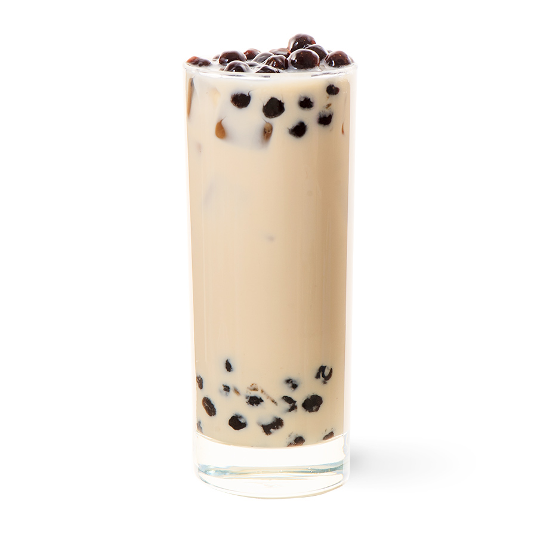
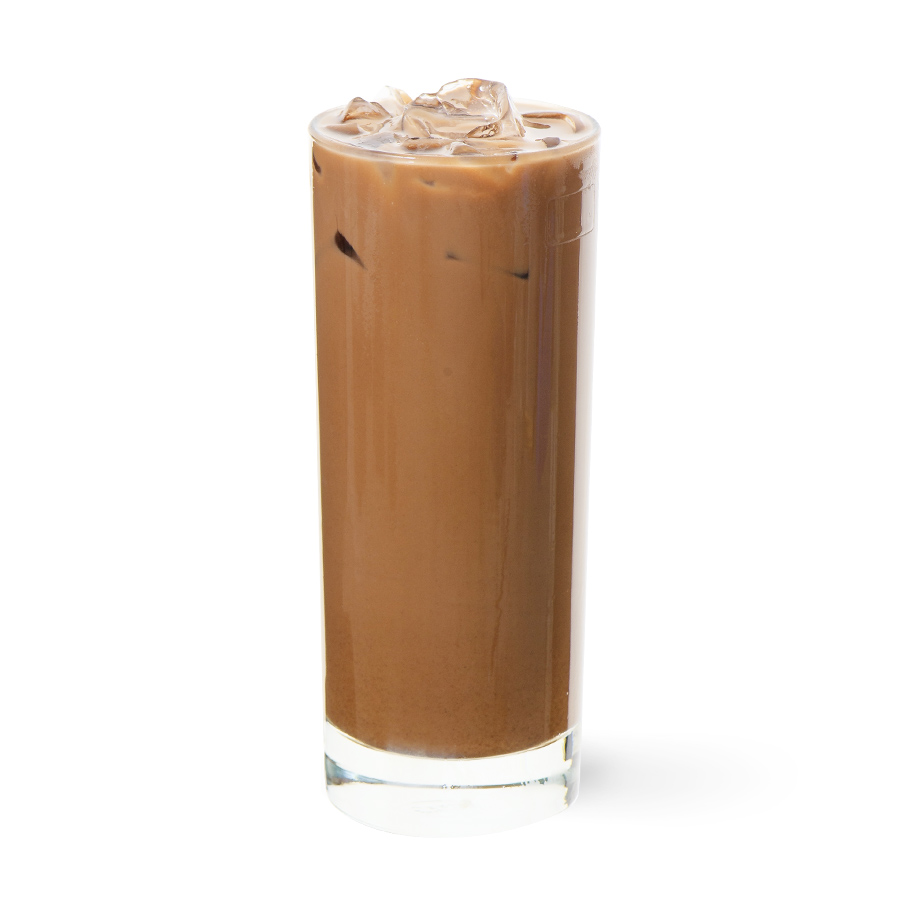
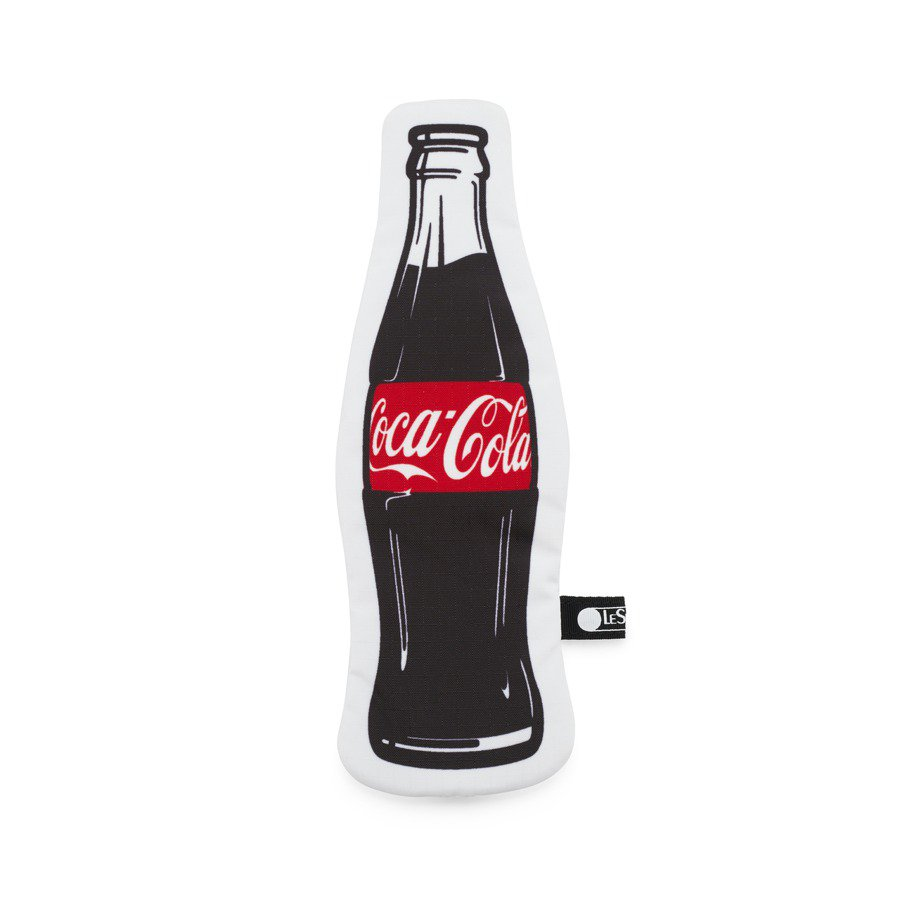

清涼一下!!!
飲品、點心

育樂店菜單介紹 赤崁店菜單介紹
地址:台南市東區育樂街185號
電話:06-2003970
營業時間: 12:00–22:00 周一公休
育樂店
地址:台南市中西區永福路二段199號
電話:06-2223376
營業時間: 11:30–21:30 周三公休
赤崁店

菜單介紹
地址:台南市東區崇善路155號
電話:09-74027042
營業時間: 11:00–20:00

菜單介紹
地址:台南市中西區永福路二段216號
電話:06-2595957
營業時間: 09:00–20:30

菜單介紹
地址:台南市中西區正興街62之2號
電話:09-55282716
營業時間: 07:00–22:00

菜單介紹
地址:台南市中西區國華街三段198號
電話:06-2261399
營業時間: 08:00–22:15

菜單介紹
地址:台南市中西區民族路二段281號
電話:06-2210901
營業時間: 11:00–19:00 周一、周二公休

珍珠奶茶

招牌拿鐵

可樂
- 珍珠奶茶(NT$60): 杯
- 招牌拿鐵(NT$70): 杯
- 可樂(NT$30): 杯
小計 0元